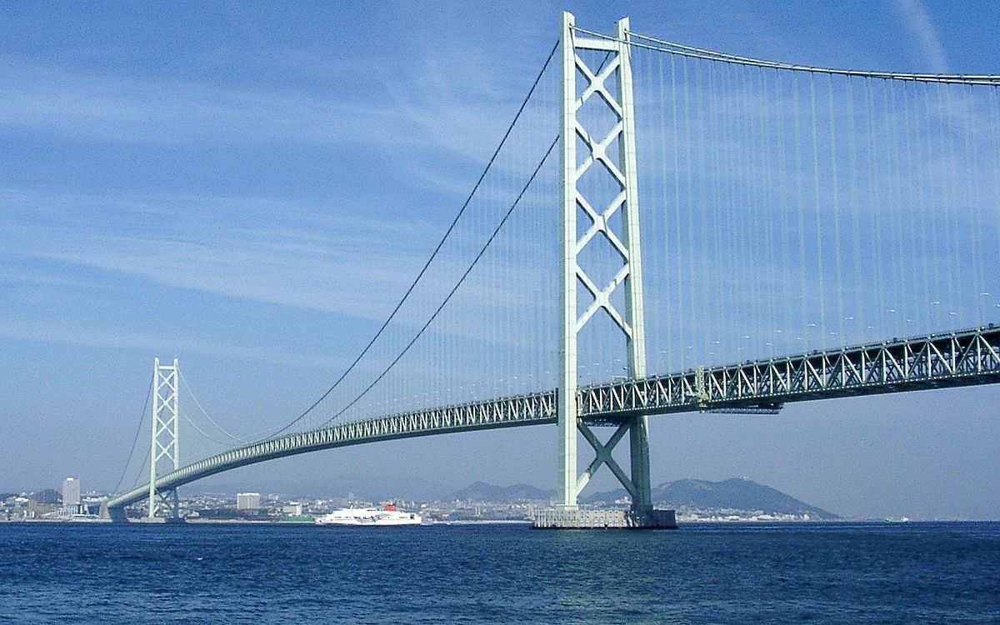

Міст Акаші-Кайкіо
Цей Японський міст можна назвати «батьком всіх підвісних мостів». Він більш ніж на 350 метрів довшою ніж другий за протяжністю підвісний міст - Голден Белт, який знаходиться в Данії. Міст Акаші-Кайко побудували в 1998-му році на зміну неабияк пошарпаного штормами Кобе-Івайа. На будівництво витратили 4, 5 млрд доларів, і 2 мільйони робочих зводили його близько десяти років. Загальної довжини сталевих балок, які були використані при будівництві мосту вистачить щоб обігнути земну кулю сім (!) разів.
